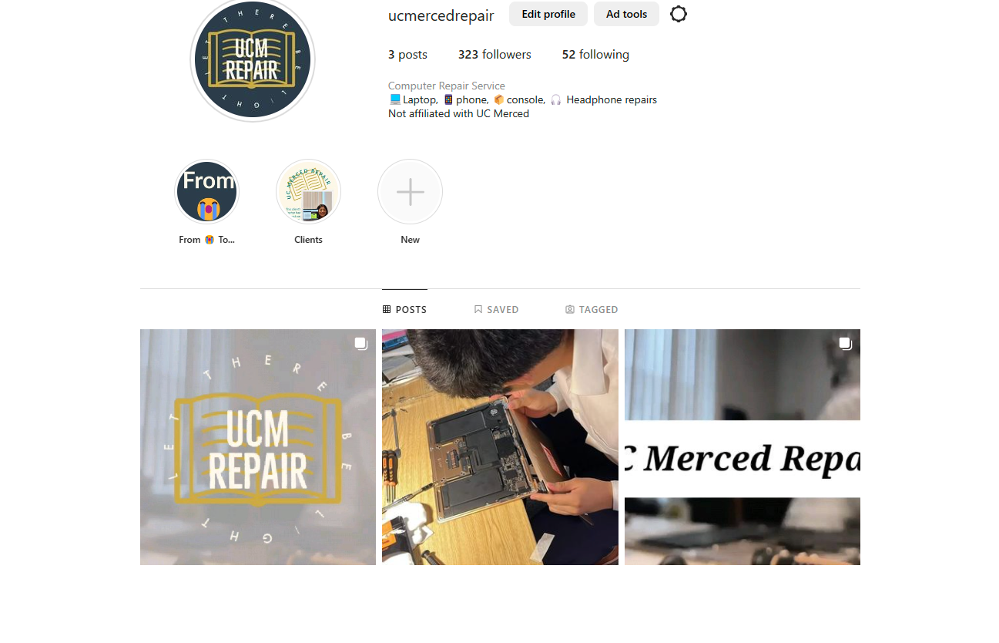

Experience
UC Merced Repair
As a student at the University of California Merced, I had the opportunity to put my technical skills to the test by founding a tech repair business. This venture allowed me to gain hands-on experience in troubleshooting and repairing a variety of hardware and software issues, as well as develop my entrepreneurial and leadership skills. I was responsible for everything from marketing the business and building relationships with clients. Through this experience, I gained a deep understanding of the technical and business aspects of running a successful tech repair company, and I am eager to bring these skills to my next challenge.
Impartial News.
When I was a high school student, I embarked on a challenging and rewarding project by founding an independent news website. I had a passion for journalism and a drive to share my perspective and insights with a wider audience. I leveraged my coding skills to build the website from scratch, and I worked hard to monetize it through various advertising channels. My efforts paid off, as the website quickly grew in popularity and reached thousands of readers. Through this experience, I gained valuable experience in coding, marketing, and leadership, and I am proud of what I was able to achieve as a young entrepreneur. I am eager to continue growing my skills and making a positive impact through my work.